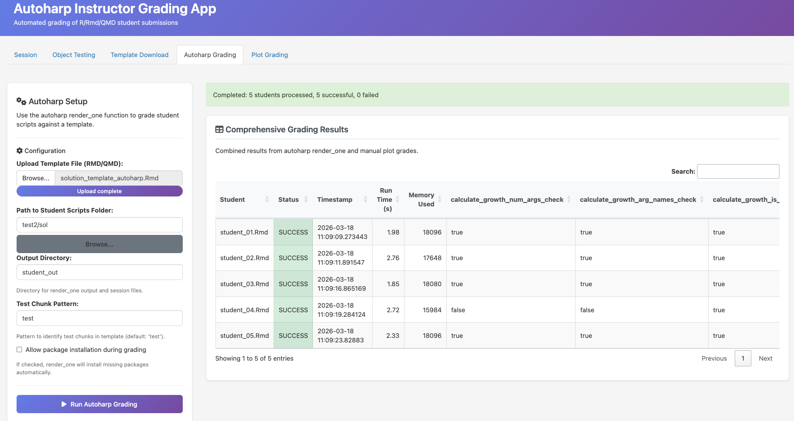
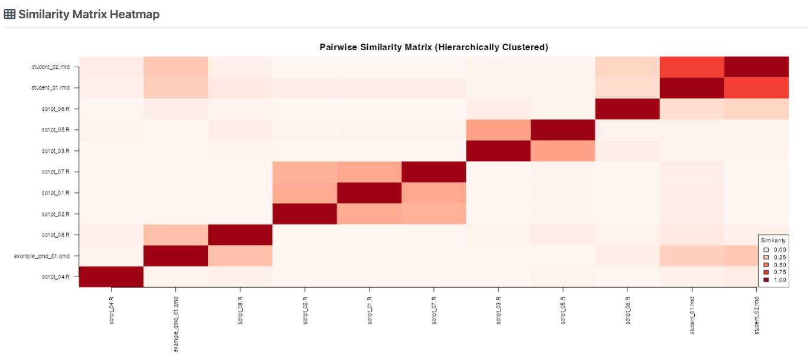
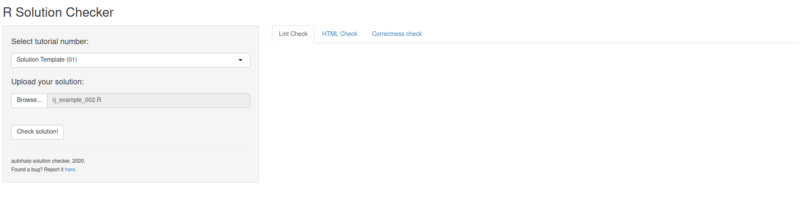

Semi-automatic grading of R and Rmd scripts: powerful, flexible, and designed for real-world teaching at scale.
autoharp is an R package that provides a customisable set of tools for assessing and grading R or R Markdown scripts submitted by students. It goes beyond simple correctness checking to offer a complete, four-layer grading framework used in production across undergraduate statistics courses.
Why autoharp?
Grading programming assignments at scale is hard. Students submit diverse code that may be correct but structured differently, or incorrect in subtle ways that output-comparison alone cannot catch. autoharp solves this with four complementary layers:
| Feature | What it Does |
|---|---|
| ✅ Output correctness | Compare student objects against a reference solution using typed, tolerance-aware checks |
| ⏱️ Runtime & memory profiling | Measure how long student code takes and how much memory it uses |
| 🌳 Static code analysis (AST) | Inspect Abstract Syntax Trees to check how students solved a problem: e.g., “did they use apply instead of a for loop?” |
| 🔍 Similarity detection | Identify suspiciously similar submissions using cosine, Jaccard, or edit-distance metrics |
The autoharp Workflow

The workflow has four phases:
- 📝 Prepare: Write a question sheet and a solution template (an Rmd with special
autoharp.objs/autoharp.scalarschunk options) - 📤 Distribute: Share the question sheet and a blank student template
- ⚙️ Grade: Run
populate_soln_env()thenrender_one()per student; each submission runs in a sandboxed R process - 📊 Review: Inspect results via logs, thumbnail galleries, and the interactive Grading App
Installation
You can install autoharp from CRAN with:
install.packages("autoharp")You can also install the development version of autoharp from GitHub with:
# install.packages("devtools")
devtools::install_github("namanlab/autoharp")Quick Start
library(autoharp)
# 1. Render the solution template to build a reference environment
soln <- populate_soln_env("solution_template.Rmd")
# 2. Grade a student submission (runs in a sandboxed process)
result <- render_one(
rmd_name = "student_submission.Rmd",
soln_env = soln$soln_env,
test_file = soln$test_file,
out_dir = "grading_output/"
)
# 3. Inspect the grading result
print(result)The Three Pillars of autoharp
1. 📄 Complete Documents, Not Snippets
autoharp grades complete, reproducible documents: entire R scripts or R Markdown files, rather than isolated code snippets. This encourages good scientific computing practices and tests the full submission pipeline.
2. 🌳 Static Analysis via AST Trees
The TreeHarp S4 class represents any R expression as a rooted tree, enabling structural code checks that go beyond output comparison:
# Convert an expression to a tree
tree <- lang_2_tree(quote(mean(x + rnorm(10))))
plot(tree)
# Check for absence of for-loops across an entire student script
forest <- rmd_to_forestharp("student_script.Rmd")
has_for_loop <- any(sapply(forest, function(t) {
any(t@nodeTypes$name == "for")
}))3. 🖥️ Integrated Shiny Applications
autoharp ships with three ready-to-use Shiny applications:
| App | Audience | Purpose |
|---|---|---|
| Grading App | Instructor | Multi-tab GUI for batch grading, session management, and manual plot review |
| Similarity App | Instructor | Detect code similarities using cosine, Jaccard, or edit-distance metrics |
| Solution Checker | Student | Self-service portal to check submissions before the deadline |
The Grading App
The Grading App provides a complete browser-based interface for the grading workflow - no command-line required. It features session management, auto-generated object tests, plot comparison, and batch grading with a live progress bar.

Batch grading: run render_one() for all student submissions with live progress tracking
Similarity Detection
The Similarity App helps identify suspiciously similar submissions using three metrics: cosine similarity, Jaccard index, and edit distance.

Pairwise similarity heatmap: darker cells indicate higher similarity between submissions
The Solution Checker (Student Portal)
The Solution Checker is a student-facing portal where students can self-check their submission before the deadline.

Students upload their script and instantly see correctness results, lint feedback, and runtime stats
In a NUS course with 122 students across two assignments, the Solution Checker saw peak usage of 19 logins/day in the final 3 days before submission, evidence that students actively use it to iterate on their work.
Real-World Validation
autoharp was developed and validated at the National University of Singapore across multiple cohorts. Key highlights from production use:
- ✅ Graded hundreds of R/Rmd submissions across statistics courses
- ⏱️ Each submission grades in under 2 minutes in a sandboxed process
- 🔍 Identified multiple cases of academic dishonesty via the Similarity App
- 📝 Students using the Solution Checker showed higher submission quality
Learning More
- 📖 Get Started: step-by-step introduction
- 🌳 TreeHarp Tutorial: deep dive into AST-based analysis
- 🔄 Grading Workflow: complete end-to-end example
- 🖥️ Shiny Apps: interactive tools guide
- 📚 Function Reference: full API documentation
Citation
If you use autoharp in your teaching or research, please cite:
@article{gopal2022autoharp,
title = {autoharp: An R Package for Autograding R/Rmd/qmd Scripts},
author = {Gopal, Vikneswaran and Naman, Agrawal and Huang, Yuting},
year = {2026}
}